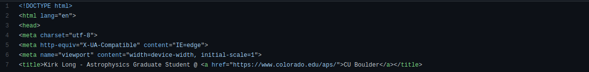

New year, new website!
I like to try to undertake a "fun" personal project over each winter break — last year's was @ThreeBodyBot — and this year I decided I needed to become a "cool" grad student and make a website! I'd flirted with some free, simple templates in the past (see this for a great intro) but I didn't love the templates and wanted to do something a little more complicated/me. At first I thought I might try to write something from scratch...but that overwhelmed me pretty quickly as I didn't have much HTML/CSS experience. I did a little searching and discovered that you can just buy website templates from wonderful designers, and that's where I got the outline for this! I paid $19 for this cool little template, and while initially it had some problems I've actually enjoyed (update: have I?) debugging them — all the tweaking and fixing has forced me to actually learn a bit (update: more than just a bit...) of HTML/CSS + improve my JavaScript skills!
The original template included a blog section (that didn't work right), and while I thought about just deleting it the outline is very well done so I've kept it — I think maybe I'll use this to document some of my personal projects / research results (if I ever generate reseach results worth talking about).
I'm hosting this site on my Github for free with Github's pages program, but I bought a custom domain name (kirklong.space) that's a little bit more fun than the "kirklong.github.io" default. I got the custom domain from Google — it costs $20/year — but just set it up to forward to the Github hosted site.
Several problems remain... The template uses a language I hadn't heard of before called PHP that Github Pages doesn't currently support — Github pages currently only allows completely static webpages, so the things PHP enables (ie comment sections, contact forms, etc) don't work currently, so I removed them. :( I could move this to a legit webhosting service, but that costs more money than free. There are still some things that I want to figure out with the main site as well — ie on mobile the cards all display simultaneously, which I'd like to fix, or at least make it so that the buttons still jump you to the right section, and I also can't figure out how to change the colors?? I've altered the CSS files but thus far no cigar there...these colors are fine but I think I want to change the teal to a blue eventually.
That's pretty much it! We'll see if I keep "blogging" into the void...
Update: I figured most of these things out! Decided to keep the teal, and I'm making myself stop for now because otherwise I may never leave my desk / do real work...